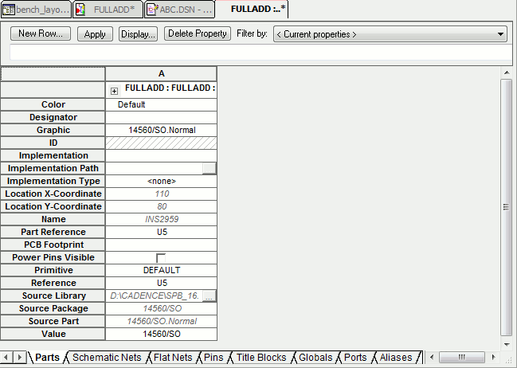
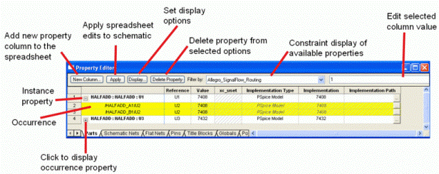

The property editor window appears when you select some combination of parts, nets, pins, title blocks, aliases and globals in the schematic page editor, and then choose Properties from the Edit menu or choose Edit Properties from the pop-up menu. You can use the property editor window to edit part, net, pin, title block, global, port, and alias properties. The property editor displays all library definitions, instance properties, and occurrence properties for an object.

New Column or New Row
Displays the Add New Column or Add New Row dialog box, depending on the property editor orientation, to add a new property column or row. The property is added to a single object if a single cell is selected or to several objects if several cells are selected. To add a property to more than one object, either shift-select the cells or select an entire row/column by clicking on the property name. To add the property to an object, you must enter a property value for a given object.
|
|
If no cell is selected on the sheet, then the value field is not activated in the Add New Column or Add New Row dialog box and the user is unable to add a new property unless the user manually enters values for the new fields in the property spreadsheet. |
Apply
Applies the changes in the property editor to the schematic page. The Apply button does not dismiss the property editor. You can also apply the changes to the schematic page by closing the property editor.
Display
Displays the Display Properties dialog box to set the display option of the selected property and its value. You cannot display properties of an occurrence property using the Display Properties dialog box.
Delete Property
Deletes the editable property from the selected object or objects. (Properties that are not editable appear in italics.) If you select all of a property's cells and click the Delete Property button, the property will be removed from the selected objects but will remain in the filter. This is indicated by the hash marks that appear in the cell.
Filter by
Specifies a filter by which to view the objects. Use the
property editor filter to constrain the available
properties. For example, the Capture filter displays common
schematic capture properties available to most parts, while
the Capture-Allegro filter displays the properties needed
to send a design to Allegro PCB Editor.The Layout filter
displays properties needed to send a design to OrCAD
Layout. For information about the Allegro PCB Editor
properties, see document Allegro Platform Properties
Reference guide (propref.pdf).
You can view all the properties available on the objects
in the property editor by selecting the <Current
properties> filter from the drop-down list.
Another example of constraining properties is using the
Allegro_Signal_Flow_Routing. This filter setting
lets you view signal flow properties, such as
PROPAGATION_DELAY, RELATIVE_PROPAGATION_DELAY,
RATSNEST_SCHEDULE, and DIFFERENTIAL_PAIR in the Flat Nets
tab.
Column Value Editor
Displays and allows change of value in selected column. As a result, you do not need to resize the column widths to be able to view values that are larger than what can be accommodated in a column.
Parts
Displays the part properties of the selected objects. The
Parts tab includes hierarchical blocks.
You can use the Parts tab on the property editor to add
and delete property instances and occurrences and to change
their values.
Note: All property editor tabs provide one row of property information per instance or occurrence.
The Graphic property column provides the option to toggle the display of the part between Normal and Convert view. When you click the Graphic cell, a down arrow appears indicating a drop-down list. You can change the graphic's appearance on the schematic by clicking the down arrow and selecting a different view.
Schematic Nets
Displays the schematic net properties of the selected objects. This tab includes constituent nets within buses.
Pins
Displays the pins of the selected objects. This tab includes hierarchical pins in hierarchical blocks.
Title Blocks
Displays the title block properties of the selected
objects.
With the Title Blocks tab selected, you can add a property
to the Title Block instance on a schematic page that will
display the full hierarchical path to the schematic.
Globals
Displays selected globals for simultaneous editing of multiple names.
Ports
Displays source symbol, source library, and type of port properties. Provides for simultaneous editing properties of multiple ports.
Aliases
Displays color, font, name, and rotation and other properties of net aliases. Use the Aliases tab to edit multiple aliases at one time.
Rows and columns
In the property editor, each row displays an instance or an
occurrence of an object. Instance rows appear with a white
background. Occurrences appear in yellow below their
associated instance row. Occurrence rows automatically
appear when one or more of the occurrence property values
are different from the instance property values.
Each column is a placeholder that you can use to add
properties. The cells in the property editor show the
property values for each instance or occurrence. A cell
with hash marks in indicates that the property does not
exist on the object that the cell represents. You can add a
value by clicking inside the cell, typing the value, and
pressing ENTER or clicking the Apply button. A property
value in italics is a read only property cannot be edited.
Roll the mouse wheel up and down to scroll through vertically in the Property Editor.
Hold down the CTRL key and roll the mouse wheel to zoom in and zoom out.
Hold down the SHIFT key and roll the mouse wheel up and down to scroll through horizontally in the Property Editor.
Click the mouse wheel button and drag the mouse wheel:
- To the right or left in the Property Editor window to scroll horizontally.
-
Up or down in the Property Editor window to scroll
vertically.
